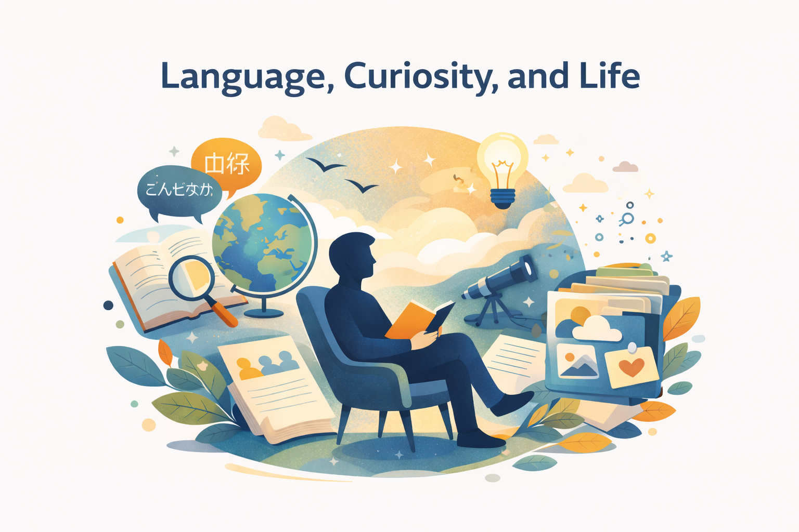

Diagnosed with lung cancer in March 2023
Kept writing “diary” every day, most of which is just health log such as medications I took when, how much etc. but also along with major treatment events like carried by 911 due to my stomach ulcer blood.
Received an email from Aza and realized this is one of the coolest project ever existed My life started from language, or at least that’s how I chose my first job (Baidu). It just sounded fun to go to China and work there using two (or more) languages.
One of the first things I decided with my wife is we do this OPOL (one-parent-one-language) polity. My wife speaks fluent Japanese, and I also speak Mandarin Chinese, and between us we speak Japanese. This was no brainer. When we do conversation within the family, I just speak Japanese, my wife Mandarin, and kids need to switch. We’ve been doing this for more than ten years and it’s working pretty well. And when I choose the movie to watch, I like the ones where people need to decode and understand Extra-Terrestrial life, such ET and Arrival.
Watch one movie every week with family, rotate three languages (English, Chinese, and Chinese)
Received an email from Aza and realized this is one of the coolest project ever existed. That’s how I joined ESP, first as a contractor, then as a full-time researcher. Everyone works remotely so we don’t call it off-site but “same-site” I take care of biases and diversity, that’s part of the reason why I was drawn to ESP, a non-profit organization that uses AI to decode animal communication.
Started Immortal LM in July 2025 to convey my messages to everyone, but especially for my family. Very wide and diverse topics such as where I lived, what kinds of pets I had, music I like and what kinds of jobs I worked on. This is what I wished my parents did for me especially my father before he passed away.
Originally I had a larger vision where people can download the recordings and/or transcripts to train a copy of “me” on top of an open LLM, even training a TTS system that “speaks” like me
I think a lot of my “hobbies” come from my dad, at least initially — music, programming, design, etc. His habit of saying is “if it’s something other people can understand, why can’t I understand?” So vast majority of my curiosity is thanks to my dad.
My mom kept saying “be a doctor, attorney, accountant, or so-called “サムライ業” in Japan. My career advice to my kids is just this — don’t listen to your parent (including this advice itself).
When I joined ESP, I also looked at other (potential) colleagues and was really impressed by their achievement etc. Go to the places where people you want to work with. It’s probably the easiest to do this by talking to them. If you are a tech person, it’s easy to know they know what they are doing.
I started playing piano — the first encounter was the organ which my dad brought home for free when I was a kindergartener. I kept practicing and played in a band in many genres including brass and rock. in middle school and high school. It was also a nice experience bonding with my classmates and friends.
I moved to the US (NYC) because one of the professors I knew was building a new research lab Rakuten Institute of Technology (RIT-NY). The project included Named Entity Recognition, machine translation/transliteration.
I joined Duolingo when there were only ~40 employees and quit after it grew to more than 100-150 people. I also joined ESP when it was one-digit small and now it’s more than a few dozen. When I join, I always look at the actual metrics. Not just the funding amount but the metrics that actually make the organization fly, such as daily active users and Github stars. “Do they make what people really want?”
I also enjoyed “walking” the full Seattle Marathon in 2024. It gave me great motivation to keep up my shape. I think my favorite way to motivate myself is social
I worked as a freelance AI engineer for approx. 1.5 years after I quit Duolingo. I detailed my experience in the following article, but I really had a positive experience (This article even climb up to the top page of Hacker News which created some buzz) I’ve always considered myself more of an artist than an engineer/researcher, and being a freelancer is a natural consequence of this.
My First Year as a Freelance AI Engineer https://masatohagiwara.net/202002-my-first-year-as-a-freelance-ai-engineer.html
As I wrote in the article, the freelance market was seller’s one, although nowadays I’m not sure about the progress of AI-based coding agents. Also, don’t do this alone. I would do this with my teammates (friends, ex-colleagues etc.)
Started “State of AI Guide (SOAIG)” in Aug 2020 (GPT-3), it started from my memo about summaries of recent and cool papers. I know there are so many
After joining ESP, I immediately started working on foundation models, but it was obvious what to work on.
obvious decision looking around what’s happening.
Recto https://masatohagiwara.net/recto.html I published in Aug. 2025 when my health was relatively stable. I really recommend this “bucket list” list because it was literally one under my circumstances.
Becoming even hard to type, think with a clear mind
My favorite essay No “yes.” Either “HELL YEAH!” or “no.” By Derek Sivers https://sive.rs/hellyeah
Thanks for the messages and financial messages, visits (omimai), delivering foods
This article is published under Creative Commons Attribution-NonCommercial-ShareAlike 4.0 International License